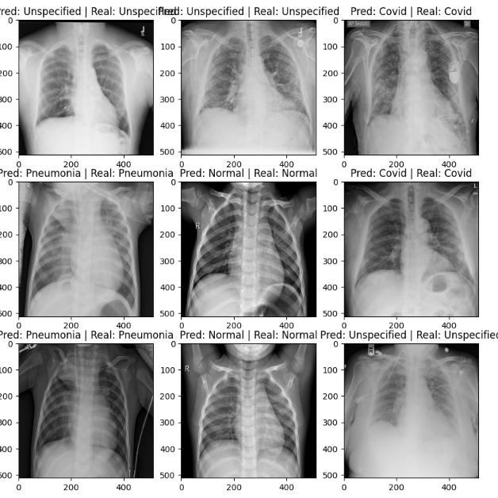
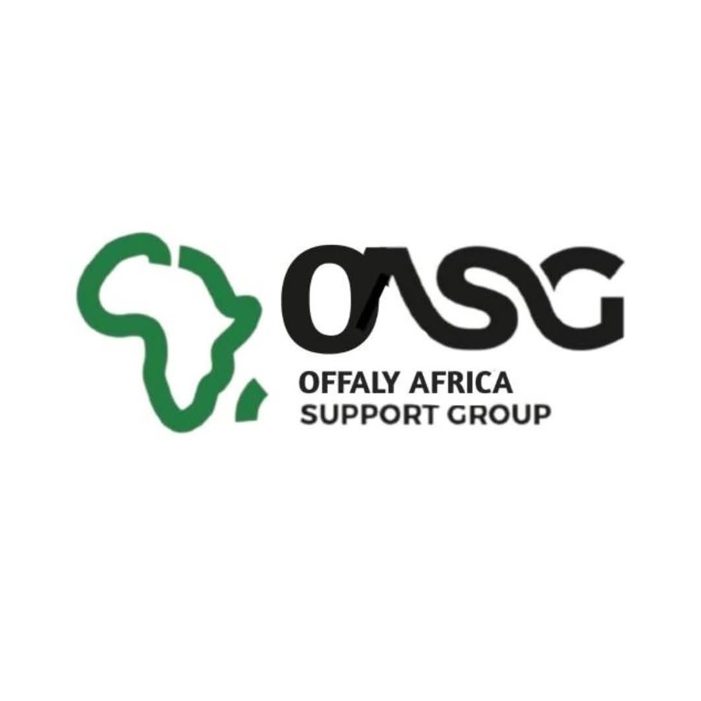

BUILDING DAY BY DAY...
David Akinsade
A Junior Software Engineer...
with experience in .NET development, workflow automation, and database management. Skilled in C#, SQL, HTML, and CSS, with hands-on experience working in Agile development teams. Strong understanding of web application development with a focus on building efficient, maintainable solutions.
C#.NETSQL
HTML5AI ToolsJavaScript
01
About
Writing clean, maintainable code and collaborating closely with teams in Agile environments is something i always look to prioritze on every project. I am also always looking to learn new tools, patterns, and ways of working. Curiosity and a willingness to keep learning are things I display.
02
Experience
Junior Software Engineer
- Developing and enhancing web applications using .NET technologies
- Building responsive, user-focused interfaces with C# and front-end tech
- Preparing and testing SQL database scripts for production environments
- Collaborating with business stakeholders on reporting requirements in Agile/Scrum
Information Technology Specialist
- Built structured, accessible web pages using HTML5 semantic elements
- Designed responsive layouts using CSS3 and media queries
- Applied accessibility principles to improve user experience
Data Retention Project Administrator
- Implemented GDPR policies, maintaining confidentiality of sensitive documentation
- Ensured documentation was named, uploaded, and filed correctly
- Maintained record accuracy, editing where necessary to keep them up to date
Software Engineering Intern
- Built reusable components to simplify workflow automation design
- Designed process models with Camunda BPM to support process automation
- Ran General Acceptance Testing to confirm systems met end-user requirements
- Worked in 3-week sprints, presenting demos of completed work
03
Projects


Loading repositories from GitHub…
04
Education
BSc (Hons), Software Design with Cloud Computing
Technological University of the Shannon · Athlone (1:1)
- Dissertation: an ML application detecting abnormalities in X-ray images
- Built a companion Android app applying the same ML model on-device
- Group projects spanning workflow automation and Agile methods
05
Expertise
Technical
Professional
Tools & IDEs
AI Tools
06
Beyond the stack
- Ranked top 20 in Ireland in a Microsoft Word GMetrix exam, and invited to Microsoft Ireland for a follow-up assessment
- Currently building websites for local community and healthcare organisations, including Offaly Africa Support Group (OASG) and Fionn Medical Centre
- Produces music using FL Studio — mixing, mastering, and track arrangement